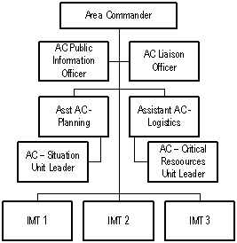

Single Command may be applied when there is no overlap of jurisdictional boundaries or when a single IC is designated by the responsible official with overall management responsibility for the incident.
Unified Command is a team effort which allows all agencies, organizations, or countries, with responsibility for the incident, either jurisdictional or functional, to jointly provide management direction to an incident through a common set of incident objectives and strategies established at the command level. This is accomplished without losing or abdicating agency authority, responsibility, or accountability.
Characteristics of Unified Command
Considerations for Unified Command
Incident Complex refers to the two or more individual incidents located in the same general area that are assigned to a single IC or UIC.
Characteristics of Incident Complex
Considerations for Incident Complex
Single Incident Divided into Two Incidents is used if an incident becomes too large and it spreads to more than one jurisdiction, such as a flood spreading downstream. As the incident spreads, there are different objectives that must be accomplished in different areas.
Characteristics of Single Incident Divided into Two Incidents
Considerations for Single Incident divided into Two Incidents
Jurisdictional agencies with the IMT must decide how to divide the incident into two based on :
An Area Command is activated only if necessary, depending on the complexity of the incident and the incident management span of control considerations.
Area Command Teams (ACT) are usually small ICS management teams consisting of 10 or less individuals made up of an Area Commander (AC), PSC, LSC, OSC, and appropriate staff to assist them.
An ACT oversees the management of multiple incidents that are each being managed by IMTs. It is an incident management organization established over two or more incidents to oversee multiple incident management teams managing a single very large incident
Responsibilities
